Rows: 65
Columns: 3
$ x <dbl> 4.892947, 4.232442, 1.892767, 4.730670, 5.373811, 4.156704, 4.44…
$ y <dbl> 8.197365, 39.317266, 9.828075, 18.352456, 20.915403, 19.258701, …
$ color <fct> forestgreen, blue, forestgreen, red, red, red, blue, red, forest…Final Study Guide
The final exam is cumulative, but there will be a greater emphasis on material covered in the second half of the course (i.e., statistical modeling and inference). For a review of material covered in the first half of the course, please reference the “Midterm Review” provided here.
Try this
Attempt all of the problems below without resources. Make note of your pain points and blind spots along the way. That might give you an idea of the stuff you would benefit from if you had it on a cheat sheet.
Concepts and main ideas
Question 1
Can you answer each of these in one or two sentences?
- When we plot a line of best fit for a numerical predictor and numerical response, what does “best” mean?
- What does the correlation coefficient between two numerical variables measure?
- What does the \(R^2\) of a linear regression measure?
- What is the difference between \(Y=\beta_0+\beta_1 X + \varepsilon\) and \(\widehat{Y}=b_0+b_1 X\)?
- Under what circumstances is the intercept in a regression model a “meaningful” quantity?
- If you run a “simple” linear regression model with a numerical response and a categorical predictor with three levels, what does the computer actually do to estimate that model?
- Consider this bit of toy code:
linear_reg() |> fit(_BLANK_, df)? What goes in the blank? What purpose does that argument serve, and how do you use it? - Let \(\widehat{y}^{(\text{old})}\) be the prediction at \(x\) of a simple linear regression, and let \(\widehat{y}^{(\text{new})}\) be the prediction at \(x+1\) of the same regression. How are \(\widehat{y}^{(\text{old})}\) and \(\widehat{y}^{(\text{new})}\) related? In other words, how do the predictions of the simple linear regression model differ when you change the input from \(x\) to \(x+1\)?
- Let \(\widehat{o}^{(\text{old})}\) be the estimated odds at \(x\) from a simple logistic regression model, and let \(\widehat{o}^{(\text{new})}\) be the estimated odds at \(x+1\) of the same regression. How are \(\widehat{o}^{(\text{old})}\) and \(\widehat{o}^{(\text{new})}\) related? In other words, how do the predicted odds of the simple logistic regression model differ when you change the input from \(x\) to \(x+1\)?
- Why is adjusted \(R^2\) a better linear regression model selection criterion than unadjusted \(R^2\)?
Visual understanding
Question 2
Here’s a nonsense dataset that I made up:
Imagine you run this code:
linear_reg() |>
fit(y ~ x + color, df) |>
tidy()The output would be a lil’ table like this:
term |
estimate |
|---|---|
(Intercept) |
\(b_0\) |
x |
\(b_1\) |
colorblue |
\(b_2\) |
colorforestgreen |
\(b_3\) |
A plot of the model fit might look something like this:
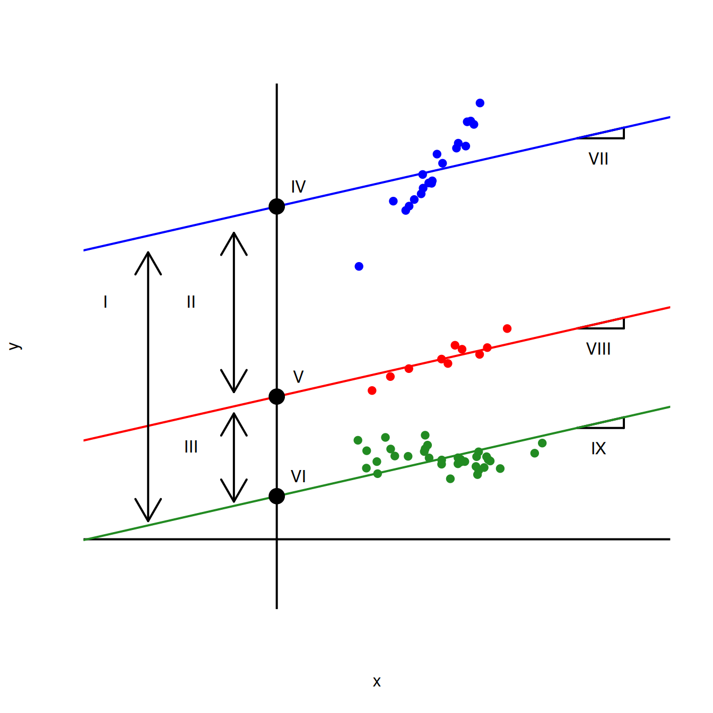
Match the labeled features of the plot to the correct quantity listed below:
- \(b_0\)
- \(b_1\)
- \(b_2\)
- \(b_3\)
- \(b_0 + b_1\)
- \(b_0 + b_2\)
- \(b_0 + b_3\)
- \(b_1 + b_2\)
- \(b_1 + b_3\)
- \(b_2 + b_3\)
- \(b_2 - b_3\)
Note: Some of these quantities might go unused, and some might be used more than once.
Questions 3 - 8
In what follows, let \(y\) be a binary response, let \(x\) be a numerical predictor, and let \(z\) be a binary predictor. Match the S-curve to the model equation.
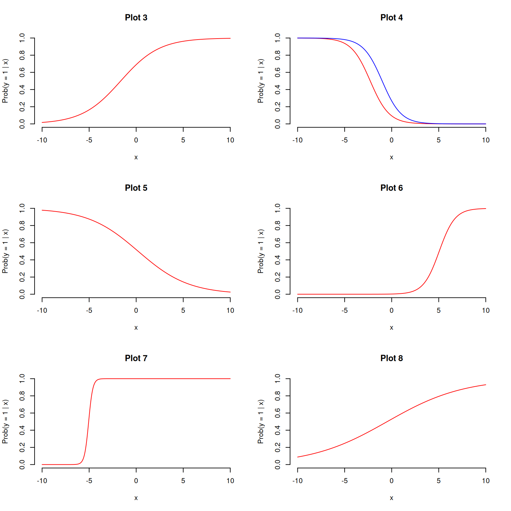
- \(\log\left(\frac{\hat{p}}{1-\hat{p}}\right) = 22.9 + 4.54 \times x\)
- \(\log\left(\frac{\hat{p}}{1-\hat{p}}\right) = 0.118 + 0.246 \times x\)
- \(\log\left(\frac{\hat{p}}{1-\hat{p}}\right) = 0.798 + 0.486 \times x\)
- \(\log\left(\frac{\hat{p}}{1-\hat{p}}\right) = -6.035 + 1.194 \times x\)
- \(\log\left(\frac{\hat{p}}{1-\hat{p}}\right) = -2.26 - 0.99 \times x+1.26\times z\)
- \(\log\left(\frac{\hat{p}}{1-\hat{p}}\right) = 0.079 -0.373 \times x\)
Questions 9 - 12
Recall the dataset on spam emails:
email# A tibble: 3,921 × 21
spam exclaim_mess to_multiple from cc sent_email time
<fct> <dbl> <fct> <fct> <int> <fct> <dttm>
1 0 0 0 1 0 0 2012-01-01 06:16:41
2 0 1 0 1 0 0 2012-01-01 07:03:59
3 0 6 0 1 0 0 2012-01-01 16:00:32
4 0 48 0 1 0 0 2012-01-01 09:09:49
5 0 1 0 1 0 0 2012-01-01 10:00:01
6 0 1 0 1 0 0 2012-01-01 10:04:46
7 0 1 1 1 0 1 2012-01-01 17:55:06
8 0 18 1 1 1 1 2012-01-01 18:45:21
9 0 1 0 1 0 0 2012-01-01 21:08:59
10 0 0 0 1 0 0 2012-01-01 18:12:00
# ℹ 3,911 more rows
# ℹ 14 more variables: image <dbl>, attach <dbl>, dollar <dbl>, winner <fct>,
# inherit <dbl>, viagra <dbl>, password <dbl>, num_char <dbl>,
# line_breaks <int>, format <fct>, re_subj <fct>, exclaim_subj <dbl>,
# urgent_subj <fct>, number <fct>Here is a regression model trained on all available predictors:
log_fit <- logistic_reg() |>
fit(spam ~ ., data = email)The in-sample predictions of the model are here:
email_aug <- augment(log_fit, email)
email_aug# A tibble: 3,921 × 24
.pred_class .pred_0 .pred_1 spam exclaim_mess to_multiple from cc
<fct> <dbl> <dbl> <fct> <dbl> <fct> <fct> <int>
1 0 0.867 1.33e- 1 0 0 0 1 0
2 0 0.943 5.70e- 2 0 1 0 1 0
3 0 0.942 5.78e- 2 0 6 0 1 0
4 0 0.920 7.96e- 2 0 48 0 1 0
5 0 0.903 9.74e- 2 0 1 0 1 0
6 0 0.901 9.87e- 2 0 1 0 1 0
7 0 1.000 7.89e-12 0 1 1 1 0
8 0 1.000 1.24e-12 0 18 1 1 1
9 0 0.862 1.38e- 1 0 1 0 1 0
10 0 0.922 7.76e- 2 0 0 0 1 0
# ℹ 3,911 more rows
# ℹ 16 more variables: sent_email <fct>, time <dttm>, image <dbl>,
# attach <dbl>, dollar <dbl>, winner <fct>, inherit <dbl>, viagra <dbl>,
# password <dbl>, num_char <dbl>, line_breaks <int>, format <fct>,
# re_subj <fct>, exclaim_subj <dbl>, urgent_subj <fct>, number <fct>To see how well the model did, we can compute the classification error rates for different thresholds and summarize the results with the ROC curve:
email_roc <- roc_curve(email_aug, truth = spam, .pred_1, event_level = "second")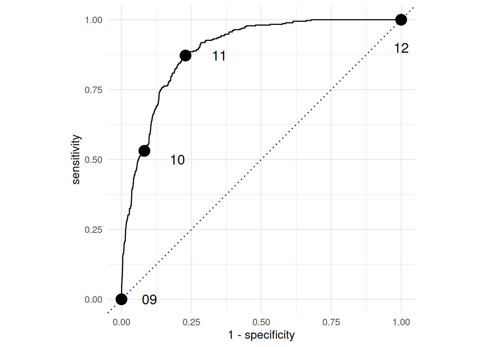
Match the point on the ROC curve to the threshold that was used to compute it.
email_aug |>
mutate(.pred_class = if_else(.pred_1 <= 0.25, 0, 1)) |>
count(spam, .pred_class) |> group_by(spam) |> mutate(prop = n / sum(n))# A tibble: 4 × 4
# Groups: spam [2]
spam .pred_class n prop
<fct> <dbl> <int> <dbl>
1 0 0 3263 0.918
2 0 1 291 0.0819
3 1 0 172 0.469
4 1 1 195 0.531 email_aug |>
mutate(.pred_class = if_else(.pred_1 <= 0.0, 0, 1)) |>
count(spam, .pred_class) |> group_by(spam) |> mutate(prop = n / sum(n))# A tibble: 2 × 4
# Groups: spam [2]
spam .pred_class n prop
<fct> <dbl> <int> <dbl>
1 0 1 3554 1
2 1 1 367 1email_aug |>
mutate(.pred_class = if_else(.pred_1 <= 1.00, 0, 1)) |>
count(spam, .pred_class) |> group_by(spam) |> mutate(prop = n / sum(n))# A tibble: 2 × 4
# Groups: spam [2]
spam .pred_class n prop
<fct> <dbl> <int> <dbl>
1 0 0 3554 1
2 1 0 367 1email_aug |>
mutate(.pred_class = if_else(.pred_1 <= 0.1, 0, 1)) |>
count(spam, .pred_class) |> group_by(spam) |> mutate(prop = n / sum(n))# A tibble: 4 × 4
# Groups: spam [2]
spam .pred_class n prop
<fct> <dbl> <int> <dbl>
1 0 0 2740 0.771
2 0 1 814 0.229
3 1 0 47 0.128
4 1 1 320 0.872Stat doctor
What’s wrong with the interpretations below? Diagnose the problem and fix it if possible.
Question 13
Some bozo ran this regression and wrote the following interpretation:
linear_reg() |>
fit(bill_length_mm ~ flipper_length_mm, penguins) |>
tidy()# A tibble: 2 × 5
term estimate std.error statistic p.value
<chr> <dbl> <dbl> <dbl> <dbl>
1 (Intercept) -7.26 3.20 -2.27 2.38e- 2
2 flipper_length_mm 0.255 0.0159 16.0 1.74e-43If the flipper length of a penguin increases by 1mm, then the bill length will increase by 0.25mm.
Question 14
Some schmuck ran this regression and wrote the following interpretation:
logistic_reg() |>
fit(spam ~ num_char, email) |>
tidy()# A tibble: 2 × 5
term estimate std.error statistic p.value
<chr> <dbl> <dbl> <dbl> <dbl>
1 (Intercept) -1.80 0.0716 -25.1 2.04e-139
2 num_char -0.0621 0.00801 -7.75 9.50e- 15If the number of characters in an email increases by 1000, then the estimated probability of that email being spam is lower by -0.062, on average.
FYI: from the documentation (?email), num_char is “The number of characters in the email, in thousands.”
Question 15
Some putz ran this regression and wrote the following interpretation:
linear_reg() |>
fit(body_mass_g ~ flipper_length_mm + bill_length_mm, penguins) |>
tidy()# A tibble: 3 × 5
term estimate std.error statistic p.value
<chr> <dbl> <dbl> <dbl> <dbl>
1 (Intercept) -5737. 308. -18.6 7.80e-54
2 flipper_length_mm 48.1 2.01 23.9 7.56e-75
3 bill_length_mm 6.05 5.18 1.17 2.44e- 1If flipper length and bill length both increase by 1mm, then we predict that body mass is lower by 48.14 grams, on average.
Question 16
Some blockhead ran this regression and wrote the following interpretation:
linear_reg() |>
fit(body_mass_g ~ flipper_length_mm * species, penguins) |>
tidy()# A tibble: 6 × 5
term estimate std.error statistic p.value
<chr> <dbl> <dbl> <dbl> <dbl>
1 (Intercept) -2536. 879. -2.88 4.19e- 3
2 flipper_length_mm 32.8 4.63 7.10 7.69e-12
3 speciesChinstrap -501. 1523. -0.329 7.42e- 1
4 speciesGentoo -4251. 1427. -2.98 3.11e- 3
5 flipper_length_mm:speciesChinstrap 1.74 7.86 0.222 8.25e- 1
6 flipper_length_mm:speciesGentoo 21.8 6.94 3.14 1.84e- 3If the flipper length of a Chinstrap penguin increases by 1mm, then we predict that the body mass is higher by 1.74 grams on average.
Question 17
Some nitwit ran this regression and wrote the following interpretation:
linear_reg() |>
fit(hp ~ mpg, mtcars) |>
glance()# A tibble: 1 × 12
r.squared adj.r.squared sigma statistic p.value df logLik AIC BIC
<dbl> <dbl> <dbl> <dbl> <dbl> <dbl> <dbl> <dbl> <dbl>
1 0.602 0.589 43.9 45.5 0.000000179 1 -165. 337. 341.
# ℹ 3 more variables: deviance <dbl>, df.residual <int>, nobs <int>About 60% of the observed variation in miles/gallon is explained by the model.
Question 18
Some chooch ran this regression and wrote the following interpretation:
logistic_reg() |>
fit(spam ~ exclaim_mess + viagra + dollar, email) |>
tidy()# A tibble: 4 × 5
term estimate std.error statistic p.value
<chr> <dbl> <dbl> <dbl> <dbl>
1 (Intercept) -2.22 0.0568 -39.1 0
2 exclaim_mess 0.00189 0.00108 1.75 0.0794
3 viagra 1.86 40.6 0.0459 0.963
4 dollar -0.0656 0.0208 -3.15 0.00165If an email contains no exclamation marks, no dollar signs, and no mentions of viagra, then the model predicts that the probability of it being spam is \(e^{-2.218}\approx 0.10886\).
Question 19
Some nincompoop ran this regression and wrote the following interpretation:
linear_reg() |>
fit(bill_length_mm ~ bill_depth_mm + sex, penguins) |>
tidy()# A tibble: 3 × 5
term estimate std.error statistic p.value
<chr> <dbl> <dbl> <dbl> <dbl>
1 (Intercept) 61.0 2.35 26.0 7.39e-82
2 bill_depth_mm -1.15 0.141 -8.16 7.35e-15
3 sexmale 5.44 0.555 9.81 4.18e-20If a male penguin has a bill depth of 0mm (sad!), then we expect its bill length to be 60.99mm on average.
Question 20
Some silly goose ran this regression and wrote the following interpretation:
linear_reg() |>
fit(body_mass_g ~ flipper_length_mm + bill_length_mm, penguins) |>
glance()# A tibble: 1 × 12
r.squared adj.r.squared sigma statistic p.value df logLik AIC BIC
<dbl> <dbl> <dbl> <dbl> <dbl> <dbl> <dbl> <dbl> <dbl>
1 0.760 0.759 394. 537. 9.09e-106 2 -2528. 5063. 5079.
# ℹ 3 more variables: deviance <dbl>, df.residual <int>, nobs <int>The correlation between body mass, flipper length, and bill length is about \(\sqrt{0.76}\approx 0.87\).
Pokémon
The data for Questions X - Y was originally gathered using the Complete Pokémon Dataset from Kaggle.
First, let’s load the data:
pokemon <- read_csv("data/pokemon.csv") |>
mutate(
is_legendary = as_factor(is_legendary)
)
glimpse(pokemon)Rows: 924
Columns: 17
$ name <chr> "Bulbasaur", "Ivysaur", "Venusaur", "Mega Venusaur", "…
$ generation <dbl> 1, 1, 1, 1, 1, 1, 1, 1, 1, 1, 1, 1, 1, 1, 1, 1, 1, 1, …
$ type_1 <chr> "Grass", "Grass", "Grass", "Grass", "Fire", "Fire", "F…
$ type_2 <chr> "Poison", "Poison", "Poison", "Poison", NA, NA, "Flyin…
$ height_m <dbl> 0.7, 1.0, 2.0, 2.4, 0.6, 1.1, 1.7, 1.7, 1.7, 0.5, 1.0,…
$ weight_kg <dbl> 6.9, 13.0, 100.0, 155.5, 8.5, 19.0, 90.5, 110.5, 100.5…
$ total_points <dbl> 318, 405, 525, 625, 309, 405, 534, 634, 634, 314, 405,…
$ hp <dbl> 45, 60, 80, 80, 39, 58, 78, 78, 78, 44, 59, 79, 79, 45…
$ attack <dbl> 49, 62, 82, 100, 52, 64, 84, 130, 104, 48, 63, 83, 103…
$ defense <dbl> 49, 63, 83, 123, 43, 58, 78, 111, 78, 65, 80, 100, 120…
$ sp_attack <dbl> 65, 80, 100, 122, 60, 80, 109, 130, 159, 50, 65, 85, 1…
$ sp_defense <dbl> 65, 80, 100, 120, 50, 65, 85, 85, 115, 64, 80, 105, 11…
$ speed <dbl> 45, 60, 80, 80, 65, 80, 100, 100, 100, 43, 58, 78, 78,…
$ catch_rate <dbl> 45, 45, 45, 45, 45, 45, 45, 45, 45, 45, 45, 45, 45, 25…
$ base_friendship <dbl> 70, 70, 70, 70, 70, 70, 70, 70, 70, 70, 70, 70, 70, 70…
$ base_experience <dbl> 64, 142, 236, 281, 62, 142, 240, 285, 285, 63, 142, 23…
$ is_legendary <fct> FALSE, FALSE, FALSE, FALSE, FALSE, FALSE, FALSE, FALSE…Below are several failed attempts at interpreting statistical results for these data. Diagnose the problem and fix it if possible.
Question 21
observed_fit <- pokemon |>
specify(speed ~ defense) |>
fit()
observed_fit# A tibble: 2 × 2
term estimate
<chr> <dbl>
1 intercept 69.7
2 defense -0.0144A Pokémon with speed of 0 will have defense score of 69.66.
Question 22
# A tibble: 4 × 5
term estimate std.error statistic p.value
<chr> <dbl> <dbl> <dbl> <dbl>
1 (Intercept) -7.77 0.609 -12.8 3.07e-37
2 hp 0.0274 0.00423 6.48 8.92e-11
3 attack 0.0230 0.00389 5.92 3.25e- 9
4 defense 0.0162 0.00380 4.25 2.10e- 5A one unit increase in hp is associated with a 0.027 increase in the probability that the Pokémon is not legendary, on average.
Question 23
logistic_fit |>
augment(pokemon) |>
roc_auc(
truth = is_legendary,
.pred_TRUE,
event_level = "second"
)# A tibble: 1 × 3
.metric .estimator .estimate
<chr> <chr> <dbl>
1 roc_auc binary 0.852About 85% of the variation in the response is explained by the model.
Question 24
set.seed(12345)
pokemon |>
specify(speed ~ defense) |>
generate(reps = 500, type = "bootstrap") |>
fit() |>
get_confidence_interval(
point_estimate = observed_fit,
level = 0.9,
type = "percentile"
) |>
filter(term == "defense")# A tibble: 1 × 3
term lower_ci upper_ci
<chr> <dbl> <dbl>
1 defense -0.0657 0.0458We are confident that 95% of our data lies between -0.065 and 0.046.
Question 25
set.seed(24601)
pokemon |>
specify(speed ~ defense) |>
hypothesize(null = "independence") |>
generate(reps = 500, type = "permute") |>
fit() |>
get_p_value(obs_stat = observed_fit, direction = "two-sided")# A tibble: 2 × 2
term p_value
<chr> <dbl>
1 defense 0.532
2 intercept 0.532The probability that the null hypothesis is true (meaning
defenseandspeedare uncorrelated) is about 53%.
Question 26
Because the p-value is greater than 50%, we reject the alternative hypothesis.
Data analysis
Blizzard salaries
In 2020, employees of Blizzard Entertainment circulated a spreadsheet to anonymously share salaries and recent pay increases amidst rising tension in the video game industry over wage disparities and executive compensation. (Source: Blizzard Workers Share Salaries in Revolt Over Pay)
The name of the data frame used for this analysis is blizzard_salary and the variables are:
percent_incr: Raise given in July 2020, as percent increase with values ranging from 1 (1% increase) to 21.5 (21.5% increase)salary_type: Type of salary, with levelsHourlyandSalariedannual_salary: Annual salary, in USD, with values ranging from $50,939 to $216,856.performance_rating: Most recent review performance rating, with levelsPoor,Successful,High, andTop. ThePoorlevel is the lowest rating and theToplevel is the highest rating.
The first ten rows of blizzard_salary are shown below:
# A tibble: 409 × 4
percent_incr salary_type annual_salary performance_rating
<dbl> <chr> <dbl> <chr>
1 1 Salaried 1 High
2 1 Salaried 1 Successful
3 1 Salaried 1 High
4 1 Hourly 33987. Successful
5 NA Hourly 34798. High
6 NA Hourly 35360 <NA>
7 NA Hourly 37440 <NA>
8 0 Hourly 37814. <NA>
9 4 Hourly 41101. Top
10 1.2 Hourly 42328 <NA>
# ℹ 399 more rowsQuestion 27
You fit a model for predicting raises (percent_incr) from salaries (annual_salary). We’ll call this model raise_1_fit. A tidy output of the model is shown below.
# A tibble: 2 × 5
term estimate std.error statistic p.value
<chr> <dbl> <dbl> <dbl> <dbl>
1 (Intercept) 1.87 0.432 4.33 0.0000194
2 annual_salary 0.0000155 0.00000452 3.43 0.000669 Which of the following is the best interpretation of the slope coefficient?
- For every additional $1,000 of annual salary, the model predicts the raise to be higher, on average, by 1.55%.
- For every additional $1,000 of annual salary, the raise goes up by 0.0155%.
- For every additional $1,000 of annual salary, the model predicts the raise to be higher, on average, by 0.0155%.
- For every additional $1,000 of annual salary, the model predicts the raise to be higher, on average, by 1.87%.
Question 28
You then fit a model for predicting raises (percent_incr) from salaries (annual_salary) and performance ratings (performance_rating). We’ll call this model raise_2_fit. Which of the following is definitely true based on the information you have so far?
- Intercept of
raise_2_fitis higher than intercept ofraise_1_fit. - Slope of
raise_2_fitis higher than RMSE ofraise_1_fit. - Adjusted \(R^2\) of
raise_2_fitis higher than adjusted \(R^2\) ofraise_1_fit. -
\(R^2\) of
raise_2_fitis higher \(R^2\) ofraise_1_fit.
Question 29
The tidy model output for the raise_2_fit model you fit is shown below.
# A tibble: 5 × 5
term estimate std.error statistic p.value
<chr> <dbl> <dbl> <dbl> <dbl>
1 (Intercept) 3.55 0.508 6.99 1.99e-11
2 annual_salary 0.00000989 0.00000436 2.27 2.42e- 2
3 performance_ratingPoor -4.06 1.42 -2.86 4.58e- 3
4 performance_ratingSuccessful -2.40 0.397 -6.05 4.68e- 9
5 performance_ratingTop 2.99 0.715 4.18 3.92e- 5When your teammate sees this model output, they remark
“The coefficient for
performance_ratingSuccessfulis negative. That’s weird. I guess it means that people who get successful performance ratings get lower raises.”
How would you respond to your teammate?
Question 30
Ultimately, your teammate decides they don’t like the negative slope coefficients in the model output you created (not that there’s anything wrong with negative slope coefficients!), does something else, and comes up with the following model output.
# A tibble: 5 × 5
term estimate std.error statistic p.value
<chr> <dbl> <dbl> <dbl> <dbl>
1 (Intercept) -0.511 1.47 -0.347 0.729
2 annual_salary 0.00000989 0.00000436 2.27 0.0242
3 performance_ratingSuccessful 1.66 1.42 1.17 0.242
4 performance_ratingHigh 4.06 1.42 2.86 0.00458
5 performance_ratingTop 7.05 1.53 4.60 0.00000644Unfortunately they didn’t write their code in a Quarto document, instead just wrote some code in the Console and then lost track of their work. They remember using the fct_relevel() function and doing something like the following:
blizzard_salary <- blizzard_salary |>
mutate(performance_rating = fct_relevel(performance_rating, ___))What should they put in the blanks to get the same model output as above?
- “Poor”, “Successful”, “High”, “Top”
- “Successful”, “High”, “Top”
- “Top”, “High”, “Successful”, “Poor”
- Poor, Successful, High, Top
Question 31
Suppose we fit a model to predict percent_incr from annual_salary and salary_type. A tidy output of the model is shown below.
# A tibble: 3 × 5
term estimate std.error statistic p.value
<chr> <dbl> <dbl> <dbl> <dbl>
1 (Intercept) 1.24 0.570 2.18 0.0300
2 annual_salary 0.0000137 0.00000464 2.96 0.00329
3 salary_typeSalaried 0.913 0.544 1.68 0.0938 Which of the following visualizations represent this model? Explain your reasoning.
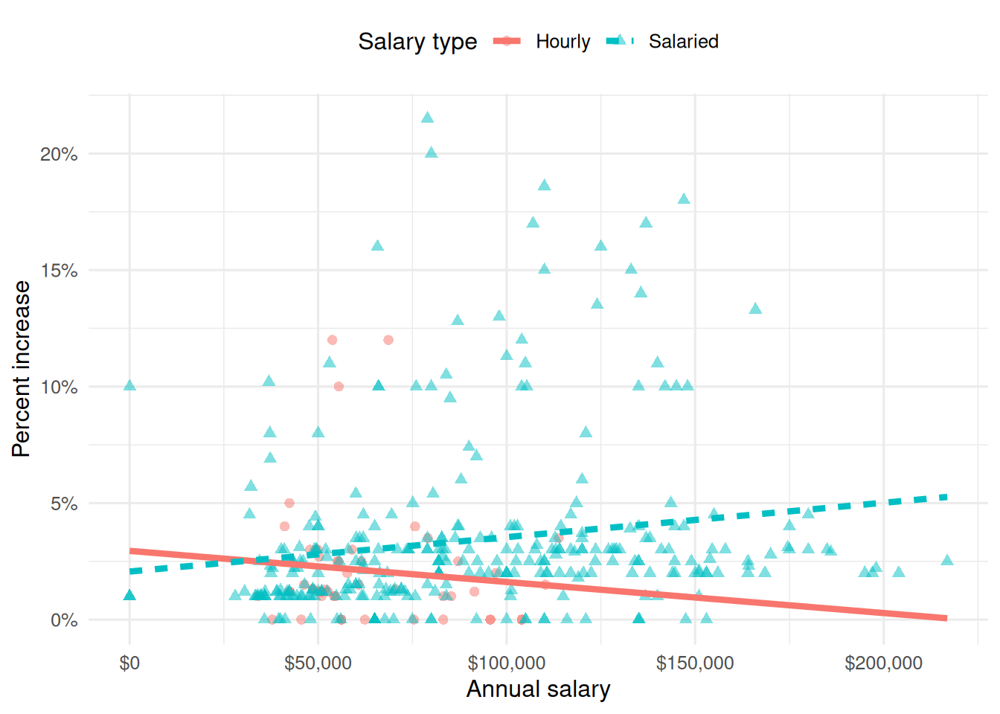
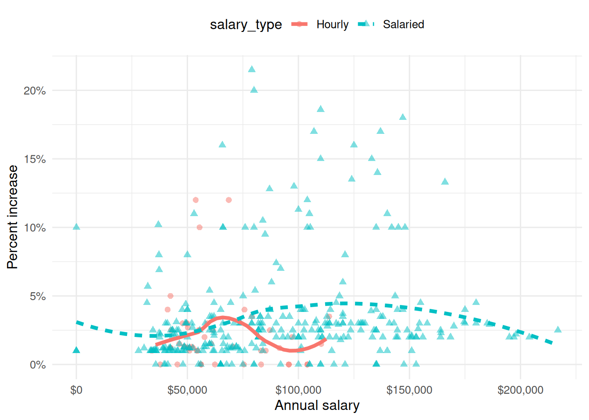
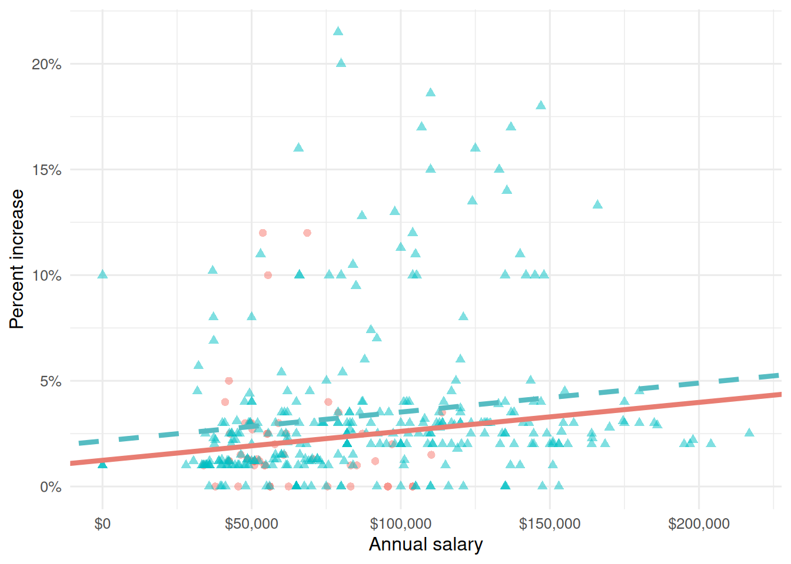
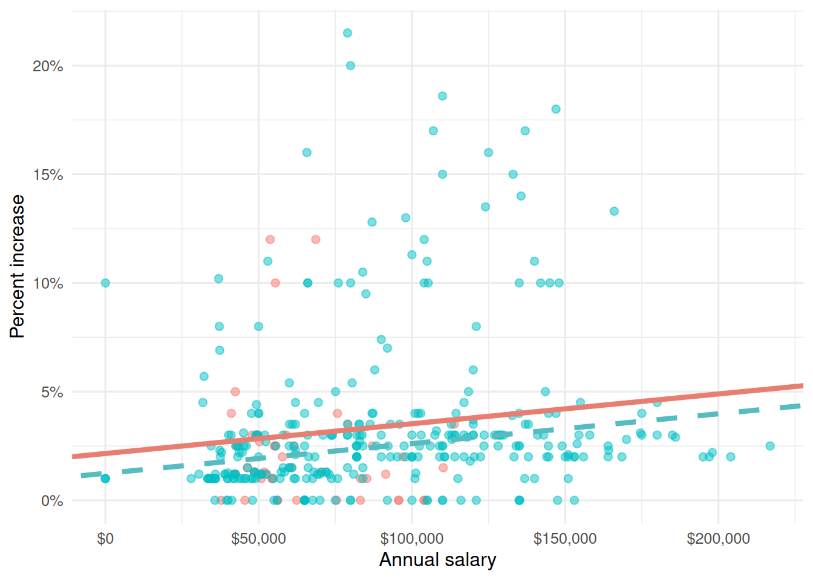
Question 32
Suppose you now fit a model to predict the natural log of percent increase, log(percent_incr), from performance rating. The model is called raise_4_fit.
You’re provided the following:
tidy(raise_4_fit) |>
select(term, estimate) |>
mutate(exp_estimate = exp(estimate))# A tibble: 4 × 3
term estimate exp_estimate
<chr> <dbl> <dbl>
1 (Intercept) -7.15 0.000786
2 performance_ratingSuccessful 6.93 1025.
3 performance_ratingHigh 8.17 3534.
4 performance_ratingTop 8.91 7438. Based on this, which of the following is true?
a. The model predicts that the percentage increase employees with Successful performance get, on average, is higher by 10.25% compared to the employees with Poor performance rating.
b. The model predicts that the percentage increase employees with Successful performance get, on average, is higher by 6.93% compared to the employees with Poor performance rating.
c. The model predicts that the percentage increase employees with Successful performance get, on average, is higher by a factor of 1025 compared to the employees with Poor performance rating.
d. The model predicts that the percentage increase employees with Successful performance get, on average, is higher by a factor of 6.93 compared to the employees with Poor performance rating.
Movies
The data for this part comes from the Internet Movie Database (IMDB). Specifically, the data are a random sample of movies released between 1980 and 2020.
The name of the data frame used for this analysis is movies, and it contains the variables shown in Table 1.
movies
| Variable | Description |
|---|---|
name |
name of the movie |
rating |
rating of the movie (R, PG, etc.) |
genre |
main genre of the movie. |
runtime |
duration of the movie |
year |
year of release |
release_date |
release date (YYYY-MM-DD) |
release_country |
release country |
score |
IMDB user rating |
votes |
number of user votes |
director |
the director |
writer |
writer of the movie |
star |
main actor/actress |
country |
country of origin |
budget |
the budget of a movie (some movies don’t have this, so it appears as 0) |
gross |
revenue of the movie |
company |
the production company |
The first thirty rows of the movies data frame are shown in Table 2, with variable types suppressed (since we’ll ask about them later).
\begin{landscape}
First 30 rows of movies, with variable types suppressed.
# A tibble: 500 × 16
name score runtime genre rating release_country release_date
1 Blue City 4.4 83 mins Action R United States 1986-05-02
2 Winter Sleep 8.1 196 Drama Not Rated Turkey 2014-06-12
3 Rang De Basan… 8.1 167 Comedy Not Rated United States 2006-01-26
4 Pokémon Detec… 6.6 104 Action PG United States 2019-05-10
5 A Bad Moms Ch… 5.6 104 Comedy R United States 2017-11-01
6 Replicas 5.5 107 Drama PG-13 United States 2019-01-11
7 Windy City 5.8 103 Drama R Uruguay 1986-01-01
8 War for the P… 7.4 140 Action PG-13 United States 2017-07-14
9 Tales from th… 6.4 98 Crime R United States 1995-05-24
10 Fire with Fire 6.5 103 Drama PG-13 United States 1986-05-09
11 Raising Helen 6 119 Comedy PG-13 United States 2004-05-28
12 Feeling Minne… 5.4 99 Comedy R United States 1996-09-13
13 The Babe 5.9 115 Biography PG United States 1992-04-17
14 The Real Blon… 6 105 Comedy R United States 1998-02-27
15 To vlemma tou… 7.6 176 Drama Not Rated United States 1997-11-01
16 Going the Dis… 6.3 102 Comedy R United States 2010-09-03
17 Jung on zo 6.8 103 Action R Hong Kong 1993-06-24
18 Rita, Sue and… 6.5 93 Comedy R United Kingdom 1987-05-29
19 Phone Booth 7 81 Crime R United States 2003-04-04
20 Happy Death D… 6.6 96 Comedy PG-13 United States 2017-10-13
21 Barely Legal 4.7 90 Comedy R Thailand 2006-05-25
22 Three Kings 7.1 114 Action R United States 1999-10-01
23 Menace II Soc… 7.5 97 Crime R United States 1993-05-26
24 Four Rooms 6.8 98 Comedy R United States 1995-12-25
25 Quartet 6.8 98 Comedy PG-13 United States 2013-03-01
26 Tape 7.2 86 Drama R Denmark 2002-07-12
27 Marked for De… 6 93 Action R United States 1990-10-05
28 Congo 5.2 109 Action PG-13 United States 1995-06-09
29 Stop-Loss 6.4 112 Drama R United States 2008-03-28
30 Con Air 6.9 115 Action R United States 1997-06-06
# ℹ 470 more rows
# ℹ 9 more variables: budget, gross, votes, year,
# director, writer, star, company, countryScore vs. runtime
In this part, we fit a model predicting score from runtime and name it score_runtime_fit.
score_runtime_fit <- linear_reg() |>
fit(score ~ runtime, data = movies)Figure 2 visualizes the relationship between score and runtime as well as the linear model for predicting score from runtime. The first three movies in Table 2 are labeled in the visualization as well. Answer all questions in this part based on Figure 2.
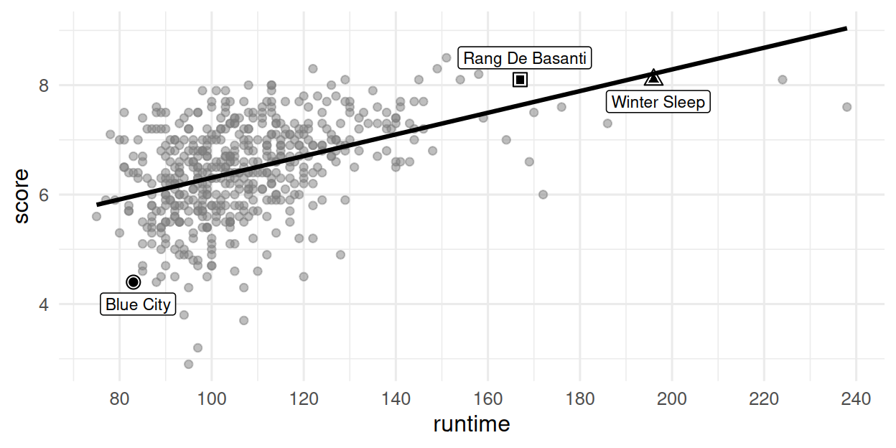
score vs. runtime for movies.
Question 33
Partial code for producing Figure 2 is given below. Which of the following goes in the blank on Line 2? Select all that apply.
grepl(" mins", runtime)grep(" mins", runtime)str_remove(runtime, " mins")as.numeric(str_remove(runtime, " mins"))na.rm(runtime)
Question 34
Based on this model, order the three labeled movies in Figure 2 in decreasing order of the magnitude (absolute value) of their residuals.
Winter Sleep > Rang De Basanti > Blue City
Winter Sleep > Blue City > Rang De Basanti
Rang De Basanti > Winter Sleep > Blue City
Blue City > Winter Sleep > Rang De Basanti
Blue City > Rang De Basanti > Winter Sleep
Question 35
The R-squared for the model visualized in Figure 2 is 31%. Which of the following is the best interpretation of this value?
31% of the variability in movie runtimes is explained by their scores.
31% of the variability in movie scores is explained by their runtime.
The model accurately predicts scores of 31% of the movies in this sample.
The model accurately predicts scores of 31% of all movies.
The correlation between scores and runtimes of movies is 0.31.
Score vs. runtime or year
The visualizations below show the relationship between score and runtime as well as score and year, respectively. Additionally, the lines of best fit are overlaid on the visualizations.
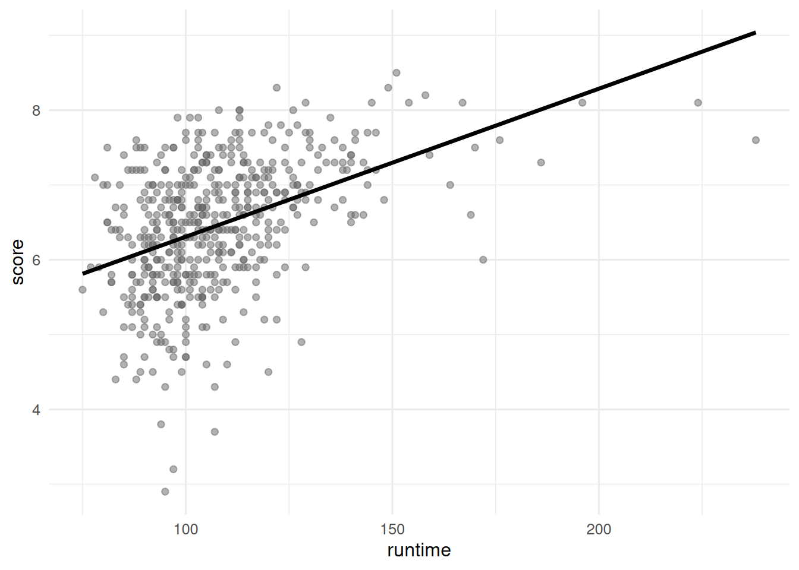
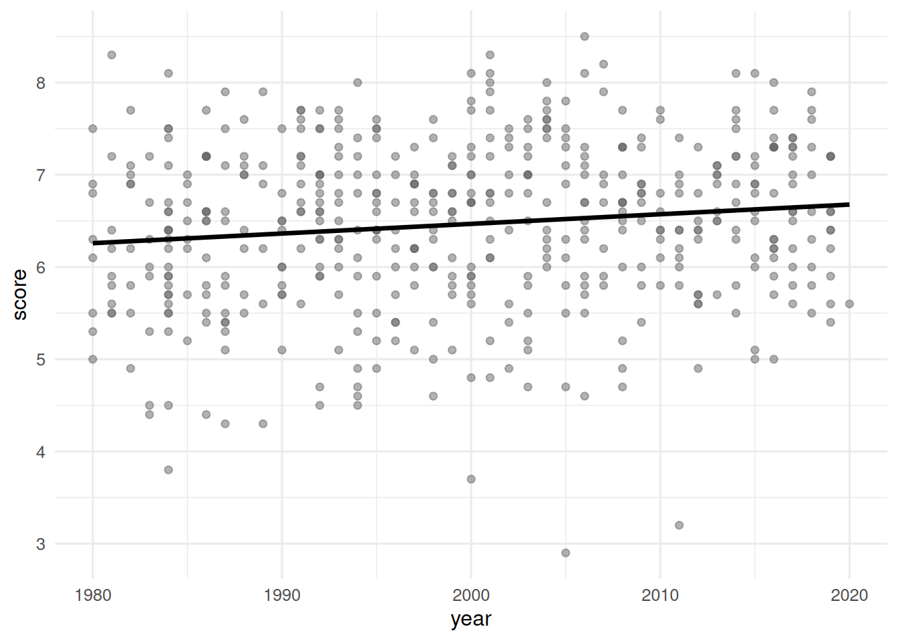
The correlation coefficients of these relationships are calculated below, though some of the code and the output are missing. Answer all questions in this part based on the code and output shown below.
movies |>
__blank_1__(
r_score_runtime = cor(runtime, score),
r_score_year = cor(year, score)
)# A tibble: 1 × 2
r_score_runtime r_score_year
<dbl> <dbl>
1 0.434. __blank_2__ Question 36
Which of the following goes in __blank_1__?
summarizemutategroup_byarrangefilter
Question 37
What can we say about the value that goes in __blank_2__?
NAA value between 0 and 0.434.
A value between 0.434 and 1.
A value between 0 and -0.434.
A value between -1 and -0.434.
Score vs. runtime and rating
In this part, we fit a model predicting score from runtime and rating (categorized as G, PG, PG-13, R, NC-17, and Not Rated), and name it score_runtime_rating_fit.
The model output for score_runtime_rating_fit is shown in Table 3. Answer all questions in this part based on Table 3.
score_runtime_rating_fit.
| term | estimate | std.error | statistic | p.value |
|---|---|---|---|---|
| (Intercept) | 4.525 | 0.332 | 13.647 | 0.000 |
| runtime | 0.021 | 0.002 | 10.702 | 0.000 |
| ratingPG | -0.189 | 0.295 | -0.642 | 0.521 |
| ratingPG-13 | -0.452 | 0.292 | -1.547 | 0.123 |
| ratingR | -0.257 | 0.285 | -0.901 | 0.368 |
| ratingNC-17 | -0.355 | 0.486 | -0.730 | 0.466 |
| ratingNot Rated | -0.282 | 0.328 | -0.860 | 0.390 |
Question 38
Which of the following is TRUE about the intercept of score_runtime_rating_fit? Select all that are true.
Keeping runtime constant, G-rated movies are predicted to score, on average, 4.525 points.
Keeping runtime constant, movies without a rating are predicted to score, on average, 4.525 points.
Movies without a rating that are 0 minutes in length are predicted to score, on average, 4.525 points.
All else held constant, movies that are 0 minutes in length are predicted to score, on average, 4.525 points.
G-rated movies that are 0 minutes in length are predicted to score, on average, 4.525 points.
Question 39
Which of the following is the best interpretation of the slope of runtime in score_runtime_rating_fit?
All else held constant, as runtime increases by 1 minute, the score of the movie increases by 0.021 points.
For G-rated movies, all else held constant, as runtime increases by 1 minute, we predict the score of the movie to be higher by 0.021 points on average.
All else held constant, for each additional minute of runtime, movie scores will be higher by 0.021 points on average.
G-rated movies that are 0 minutes in length are predicted to score 0.021 points on average.
For each higher level of rating, the movie scores go up by 0.021 points on average.
Question 40
Fill in the blank:
R-squared for
score_runtime_rating_fit(the model predictingscorefromruntimeandrating) _________ the R-squared the modelscore_runtime_fit(for predictingscorefromruntimealone).
is less than
is equal to
is greater than
cannot be compared (based on the information provided) to
is both greater than and less than
Question 41
The model score_runtime_rating_fit (the model predicting score from runtime and rating) can be visualized as parallel lines for each level of rating. Which of the following is the equation of the line for R-rated movies?
\(\widehat{score} = (4.525 - 0.257) + 0.021 \times runtime\)
\(score = (4.525 - 0.257) + 0.021 \times runtime\)
\(\widehat{score} = 4.525 + (0.021 - 0.257) \times runtime\)
\(score = 4.525 + (0.021 - 0.257) \times runtime\)
\(\widehat{score} = (4.525 + 0.021) - 0.257 \times runtime\)
Holiday movies
A team of five data scientists is working model and make inferences about holiday movies using a dataset on 1835 holiday movies; movies with “holiday”, “Christmas”, “Hanukkah”, or “Kwanzaa” (or variants thereof) in their title. Each member of the team is responsible for a different part of the analysis. The data come from the Internet Movie Database (IMDb). The data frame is called holiday_movies and it contains the variables described in the table below.
| Variable | Description |
|---|---|
id |
IMDb ID of movie |
title_type |
Type of the title (Feature Film or TV Movie) |
title |
Title used on promotional materials at the point of release |
year |
Release year of a title |
runtime |
Primary runtime of the title, in minutes |
genre |
Primary genre associated with the title |
score |
Weighted average of all the individual user ratings on IMDb |
num_votes |
Number of votes the title has received on IMDb |
christmas |
Whether the title includes “christmas”, “xmas”, “x mas”, etc. |
hanukkah |
Whether the title includes “hanukkah”, “chanukah”, etc. |
kwanzaa |
Whether the title includes “kwanzaa” |
holiday |
Whether the title includes the word “holiday” |
A peek at the data is shown below.
# A tibble: 1,835 × 12
id title_type title year runtime genre score num_votes christmas
<chr> <chr> <chr> <dbl> <dbl> <chr> <dbl> <dbl> <lgl>
1 tt0020356 Feature Fi… Sailor'… 1929 58 Comedy 5.4 55 FALSE
2 tt0020823 Feature Fi… The Dev… 1930 80 Drama 6 242 FALSE
3 tt0020985 Feature Fi… Holiday 1930 91 Comedy 6.3 638 FALSE
4 tt0021268 Feature Fi… Holiday… 1930 83 Comedy 7.4 256 FALSE
5 tt0021377 Feature Fi… Sin Tak… 1930 81 Comedy 6.1 740 FALSE
6 tt0021381 Feature Fi… Sinners… 1930 60 Other 6.3 688 FALSE
7 tt0023039 Feature Fi… Husband… 1931 70 Drama 6.4 27 FALSE
8 tt0024869 Feature Fi… Beggar'… 1934 60 Other 5.6 15 FALSE
9 tt0025006 Feature Fi… Cowboy … 1934 56 Other 4.8 74 FALSE
10 tt0025037 Feature Fi… Death T… 1934 79 Drama 6.9 2361 FALSE
# ℹ 1,825 more rows
# ℹ 3 more variables: hanukkah <lgl>, kwanzaa <lgl>, holiday <lgl>Question 42
The second team member is working on inference, focusing on comparing scores between Feature Films and TV Movies using the full dataset. They use the full dataset for their analysis. Answer the questions in this part for this team member’s portion of the analysis.
The density curves below show the distributions of scores in Feature Films and TV Movies. The means are overlaid on these distributions: a mean score of 5.65 for Feature Films and a mean score of 6.21 for TV Movies. The observed difference between these scores (TV Movies - Feature Films) is 0.56.
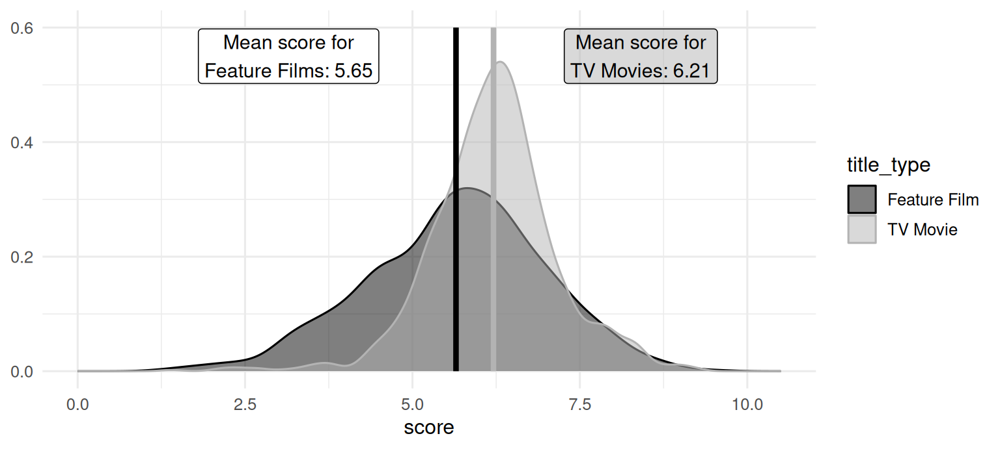
A bootstrap distribution of the difference between the mean scores of holiday TV Movies and Feature Films is generated using the code below:
The plot below visualizes the bootstrap distribution. The 95% confidence interval is (0.442, 0.670). The bounds for this interval are overlaid on the plot.
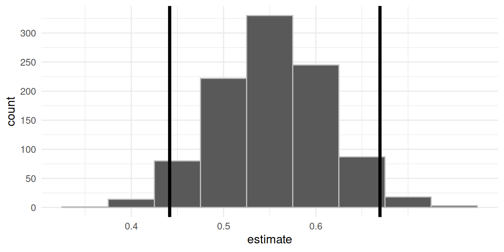
Noting that this guide is written in Quarto with all figures and tables produced with code, which of the following is TRUE about this analysis? Select all that apply.
We are 95% confident that 44.2% to 67% of holiday movies are TV Movies.
The upper bound of the interval marks the 2.5th percentile of the bootstrap distribution.
We are 95% confident that the mean score of holiday TV Movies is 0.442 points to 0.67 points higher than holiday Feature Films.
If this document is rendered again, we might get slightly different values for the bounds of the confidence interval.
1,000 bootstrap samples were taken when constructing this confidence interval.
Question 43
A post in a data science blog states that holiday TV movies score discernibly differently than holiday Feature Films, on average. Suppose you want to evaluate this claim using a hypothesis test so you write the following code to simulate the null distribution.
The plot below visualizes the null distributions for the slope and intercept. Focus on the slope.
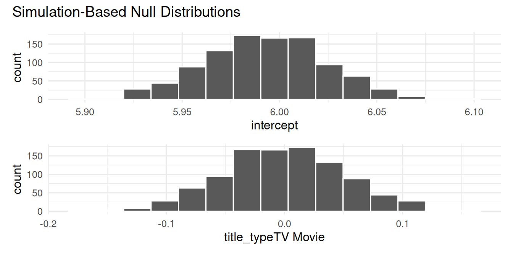
Which of the following is TRUE about this analysis? Select all that apply.
The null hypothesis states that the mean score of all holiday TV movies is equal to the mean score of all holiday Feature Films.
The alternative hypothesis states that the mean score of all holiday TV movies is different than the mean score of all holiday Feature Films.
The p-value is approximately 0.
The data provide discernible evidence that the mean score of all holiday TV movies is equal to the mean score of all holiday Feature Films.
The confidence interval from the previous question and the result of the hypothesis test in this question do not agree with each other.
Question 44
The third team member is working on modeling, predicting score. They first split up the data into training and testing sets.
They then fit a model predicting score from runtime and genre (categorized as Comedy, Drama, Other, Animation, Family, and Romance), and name it score_runtime_genre_fit, using the training data. Answer the questions in this part for this team member’s portion of the analysis.
The model output for score_runtime_genre_fit is shown below.
| term | estimate | std.error | statistic | p.value |
|---|---|---|---|---|
| (Intercept) | 7.327 | 0.258 | 28.360 | 0.000 |
| runtime | -0.018 | 0.006 | -3.183 | 0.001 |
| genreComedy | -1.001 | 0.369 | -2.714 | 0.007 |
| genreDrama | -1.177 | 0.506 | -2.327 | 0.020 |
| genreFamily | -0.086 | 0.497 | -0.172 | 0.863 |
| genreOther | -0.609 | 0.331 | -1.841 | 0.066 |
| genreRomance | 1.216 | 1.580 | 0.770 | 0.442 |
| runtime:genreComedy | 0.012 | 0.006 | 1.928 | 0.054 |
| runtime:genreDrama | 0.018 | 0.007 | 2.377 | 0.018 |
| runtime:genreFamily | 0.000 | 0.008 | 0.064 | 0.949 |
| runtime:genreOther | 0.008 | 0.006 | 1.264 | 0.206 |
| runtime:genreRomance | -0.012 | 0.019 | -0.644 | 0.520 |
Which of the following is true about the intercept of score_runtime_genre_fit? Select all that apply.
The intercept is meaningless in context of the data.
Animation movies that are 0 minutes in length are predicted to score, on average, 7.327 points.
All else held constant, movies that are 0 minutes in length are predicted to score, on average, 7.327 points.
Movies without a genre that are 0 minutes in length are predicted to score, on average, 7.327 points.
Keeping runtime constant, animation movies are predicted to score, on average, 7.327 points.
Question 45
Fill in the blank:
Adjusted R-squared for
score_runtime_genre_fit(the model predictingscorefromruntimeandgenre) _________ the adjusted R-squared of the modelscore_runtime_fit(for predictingscorefromruntimealone).
is equal to
is less than
is greater than
is both greater than and less than
cannot be compared (based on the information provided) to
Question 46
The fourth team member is also working on modeling, but they classifying movies as either Feature Films or TV Movies (title_type) based on their runtime, score, and num_votes. Their code and output is shown below.
# make title_type a factor
holiday_movies <- holiday_movies |>
mutate(title_type = fct_relevel(title_type, "TV Movie", "Feature Film"))
# split the data into training and testing
set.seed(221)
holiday_movies_split <- initial_split(holiday_movies)
holiday_movies_train <- training(holiday_movies_split)
holiday_movies_test <- testing(holiday_movies_split)
# fit model to training data
title_type_fit <- logistic_reg() |>
fit(title_type ~ runtime + score + num_votes, data = holiday_movies_train)
# make predictions for testing data
holiday_movies_aug <- augment(title_type_fit, new_data = holiday_movies_test)
# summarize predictions
holiday_movies_aug |>
count(title_type, .pred_class)# A tibble: 4 × 3
title_type .pred_class n
<fct> <fct> <int>
1 TV Movie TV Movie 256
2 TV Movie Feature Film 30
3 Feature Film TV Movie 95
4 Feature Film Feature Film 78Which of the following is the false positive rate of the model for this testing set?
30 / (30 + 256) = 0.1
256 / (30 + 256) = 0.9
95 / (95 + 78) = 0.55
78 / (95 + 78) = 0.45
78 / (30 + 78) = 0.72
Question 47
Suppose you fit one other model, predicting title_type from runtime and score only. You should choose this model over the original model if …
it has a higher adjusted R-squared
it has a higher R-squared
it has a lower false positive rate
it has a higher false negative rate
it has a higher area under the ROC curve